3上學期 第 5 章
水與大氣
答案卡
點題號可跳到該題詳解。開啟「遮住答案」後，點一下塗卡格才會顯示答案。
詳解
空氣中的水氣經凝結後會形成雲。
看題目
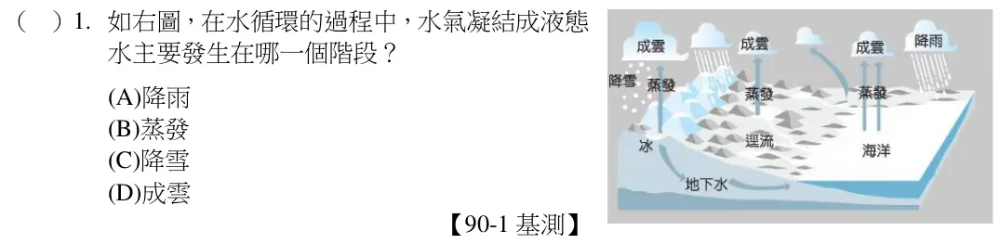
若不考慮造山運動，海岸邊的土地增加，表示河流搬運出來的泥沙量比原先多。(A)(B)都會使得河中的泥沙量減少；(C)濫墾濫伐則會使得山坡許多土壤無植披保護，被帶入河中，直流入海；(D)地磐下陷會造成海水倒灌，越來越接近海岸線。故答案為(C)。
看題目
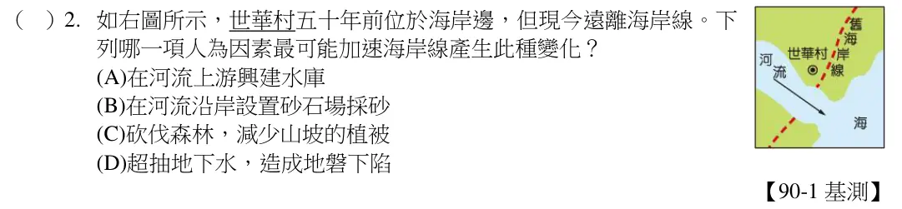
TBT 隨著河流到達出海口，再順著海流由南向北流動。而愈靠近源頭，TBT 濃度愈高，生物愈容易發生突變。故答案為(B)。
看題目
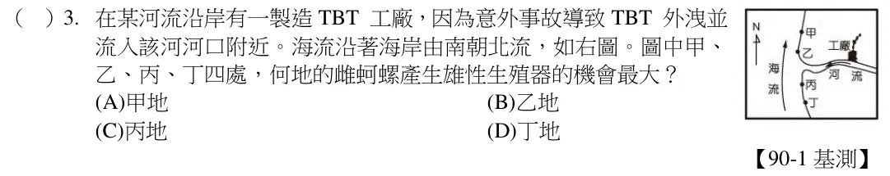
由於甲處侵蝕作用小於沉積作用，所以甲處數年後沉積物的量會增多而使河岸突出，相反的乙處侵蝕作用大於沉積作用，所以乙處的沉積物會被河流帶走而愈來愈少，河岸則向陸地凹陷。
看題目
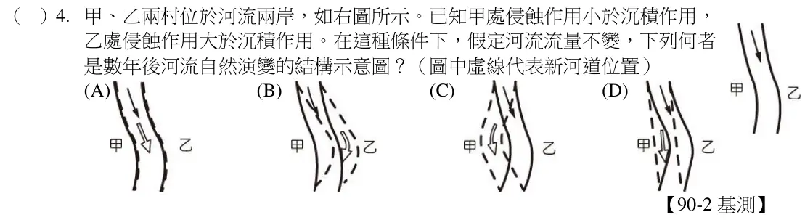
臺灣西部河流下游段常有遭盜採砂石的現象，河流中上游因此而使侵蝕作用速率加快，所以原本位於橋墩下的沉積物被流水沖蝕，導致橋墩裸露。
看題目
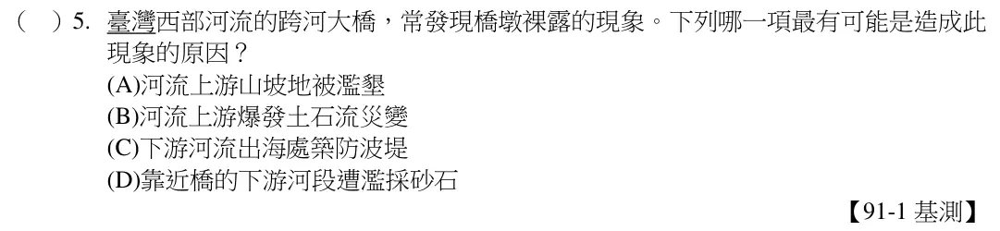
跳石礫灘位於新北市金山區海岸，近大屯火山群，河流較短，因此山上的岩塊未經長途搬運直接沉積於海邊，再受到海水侵蝕，形成該礫灘。
看題目
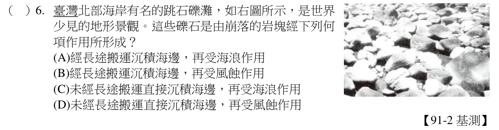
看題目
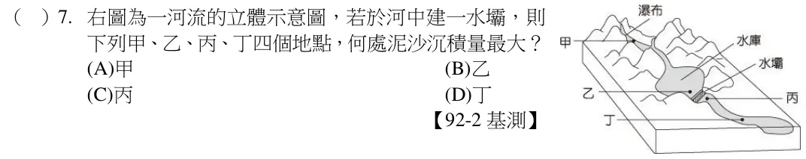
自流井口低於地下水位面，且井底必達含水層。故選(A)。
看題目
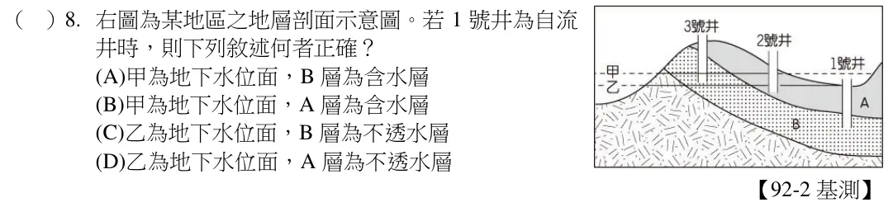
空氣、稻米、水都是短時間（數天～數年）內可以再生與補充，人類可持續使用；但煤、石油與天然氣等化石燃料，則是要經過數十萬年的成岩作用，方能形成，短時間內無法補充或再利用。故答案為(C)。
看題目
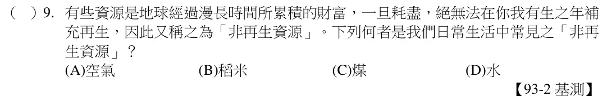
(A)集水區造林是保護措施，但增加施肥可能會造成水庫優養化；(C)興建水庫需經過審慎評估，以免破壞生態環境，因此不可過度利用水庫；(D)工廠汙水必須先經過特別處理，才可排放至海中。
看題目
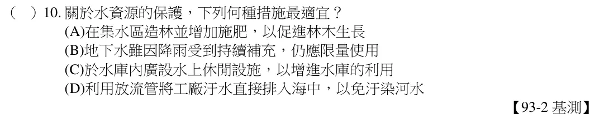
河流高於海平面的部分以侵蝕作用為主，低於海平面的部分以沉積作用為主，因此以海平面做一個界線，即所謂的最終侵蝕基準面。另外河流上可見的湖泊或水庫也有較明顯的沉積作用，但該處的沉積物可能因洪水或洩洪等原因再度流向下游，因此稱為暫時侵蝕基準面。
看題目
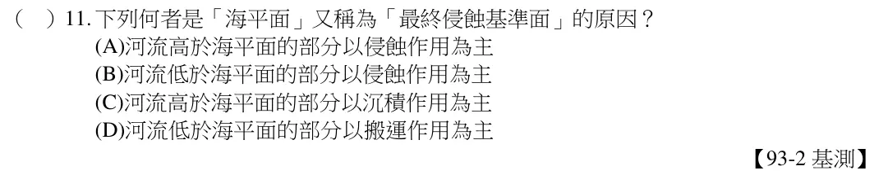
看題組文章
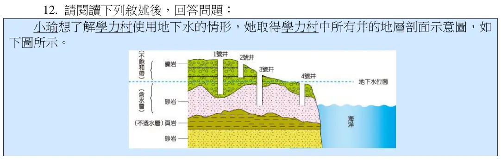
看題目
第 (1)、(2) 小題解析
(1)當地下水面高於井口時，將形成自流井。故答案為(D)。(2)海水是由海邊逐漸向陸地入侵，又4 號井較接近海邊。故答案為(D)。
【註： 當上下岩層皆為不透水層，透水層夾在中間形成受壓地下水，而且井口低於受壓地下水面，方能形成自流井。圖中4 號井也是自行流出的地下水，應稱為泉水。】
看題目
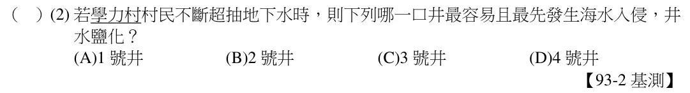
我們鑿井所取得的水是地下水，因此井水面和地下水面一致。
看題目
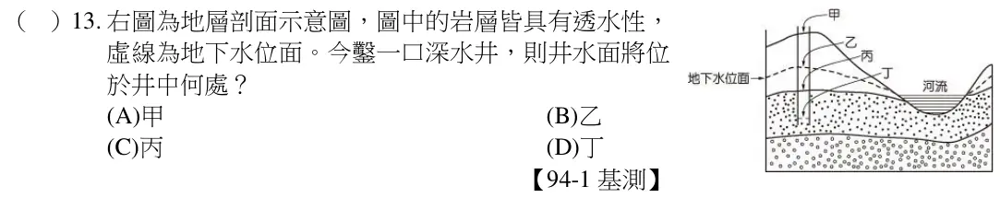
該地形是由於砂岩和頁岩抵抗風化的能力不一，導致表面呈現崎嶇不平的現象。而頁岩抗風化的能力較砂岩弱，因此形成頁岩層下凹、砂岩層突起的地形。故答案為(B)。
看題目
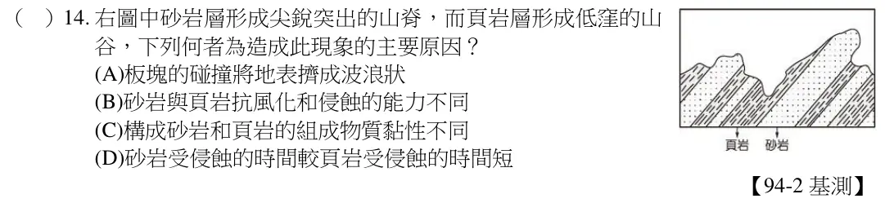
當海岸線逐漸靠近陸地時，可能是有海平面上升或海岸線（陸塊）下沉等原因，導致侵蝕基準面上移。若當海岸線逐漸遠離陸地時，可能是有海平面下降或海岸線（陸塊）上升等原因，導致侵蝕基準面下移。故答案為(C)。
看題目
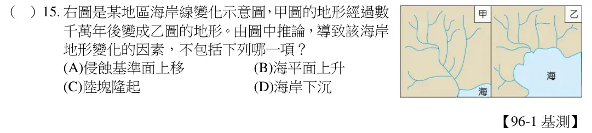
由表中可看出，民國72 年後年抽水量即大於年補注量，此後即可能發生地層下陷。
看題目
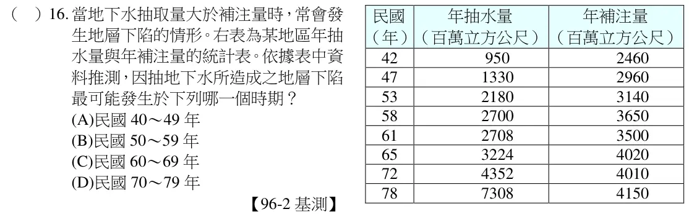
凝結：水蒸氣→水；凝固：水→冰，所以固液態均有。
看題目
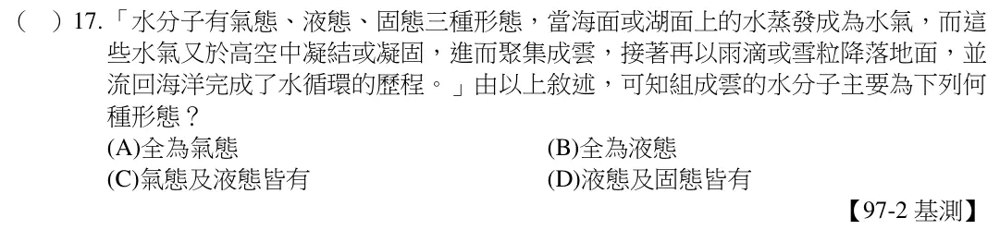
東岸多礫石，西部多沙灘，主因為流水搬運距離不同所致；由於東部的山脈離海岸較近、河流較短、坡度較陡，使河流的搬運力量較強。
看題目
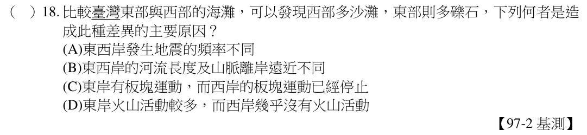
(A)由於頁岩、砂岩、礫岩皆為沉積岩，故上圖地層中的岩石皆為沉積岩；(B)化石「易」在沉積岩中發現，但沉積岩中「不一定」可發現化石；(C)變質岩需在高溫、高壓的環境中形成；(D)地層傾斜為地球內部受壓力作用，如板塊相互推擠，與侵蝕作用無關。故答案為(A)。
看題目
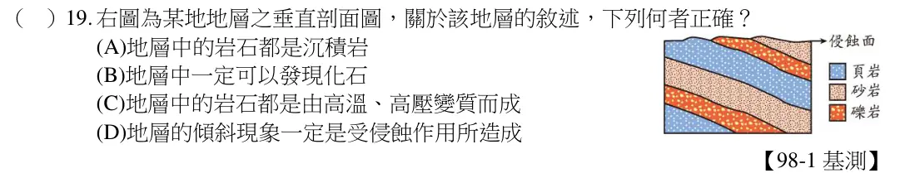
臺灣島由於板塊擠壓隆起，使得河川向下侵蝕作用更明顯，因此才出現峽谷地形。故答案為(A)。
看題目
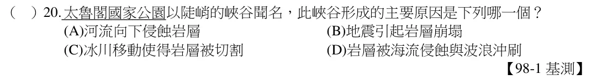
(A)河道經長時間的搬運、風化、侵蝕，與沉積作用後，容易在出海口處形成三角洲；
(B)海溝容易出現在聚合性板塊的交會處；(C)斷層容易出現在板塊交會處附近；(D)峽谷成因是地殼抬升後，經河流向下侵蝕形成，使得地表出現高低不平。故答案為(A)。
看題目
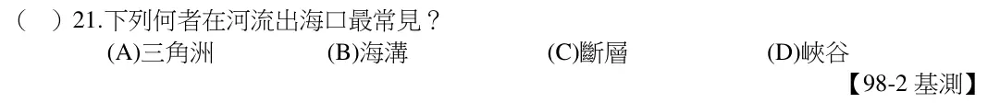
鵝卵石是石塊，經長途河水搬運所產生。故選(B)。
看題目
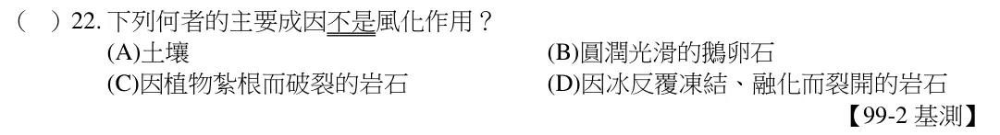
鬆散的沙子經過壓密和膠結作用，會增加顆粒間的黏著強度形成堅硬的砂岩。故選(D)。
看題目
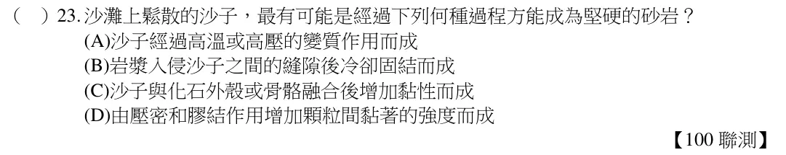
礫岩經河流搬運的過程中，滾動磨擦會使得稜角部分逐漸磨平，形成光滑表面且外型呈現橢圓形。故選(B)。
看題目
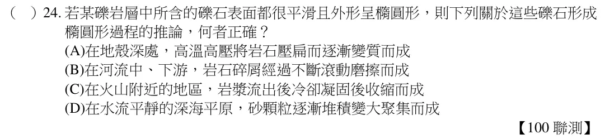
甲為化學風化作用；乙為侵蝕作用；丙為搬運作用；丁為沉積作用。故選(A)。
看題目
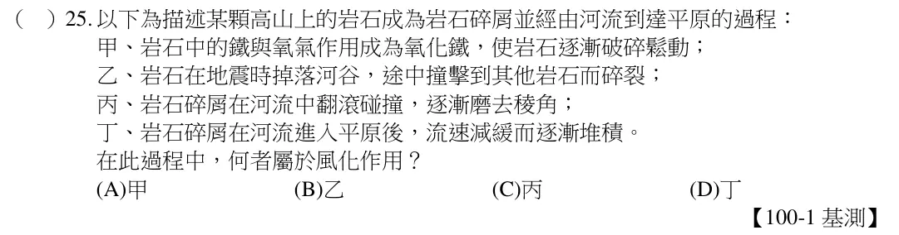
看題組文章
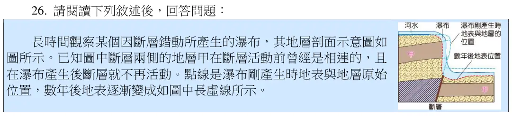
圖中瀑布形成時與數年後的瀑布位置差異得知是受到河水侵蝕作用導致。故選擇(B)。
看題目
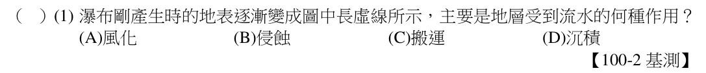
地表的水會有蒸發、凝結、降水的水循環過程，因此海水會藉由蒸發進入大氣。故選
(B)。
看題目
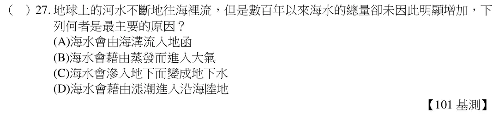
搬運作用主要是指地表各種外營力作用使沉積物離開原生地，故選項中只有(C)是屬於內營力的板塊運動作用。故選(C)。
看題目
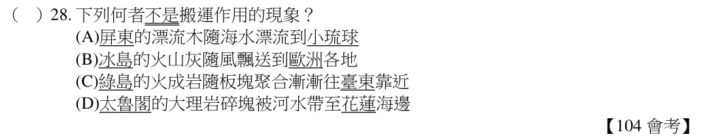
當風將地面灰塵與砂粒吹起時，是為搬運作用；當砂粒進到屋內而停留在屋內地板，是為沉積作用。故選(C)。
看題目
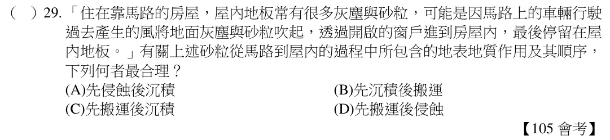
愈接近下游，河流搬運作用愈久所造成的石頭外型也愈光滑。故選(B)。
看題目
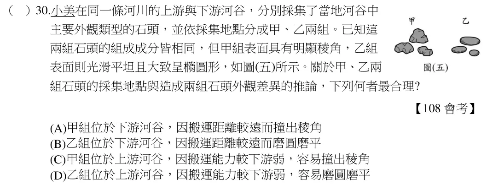
依題意，當岩石受到各項因素作用而使岩石「疏鬆破裂」，屬於風化作用；海浪長期在破裂的裂隙中「反覆作用，使裂隙加大」，屬於侵蝕作用。故選(A)。
看題目
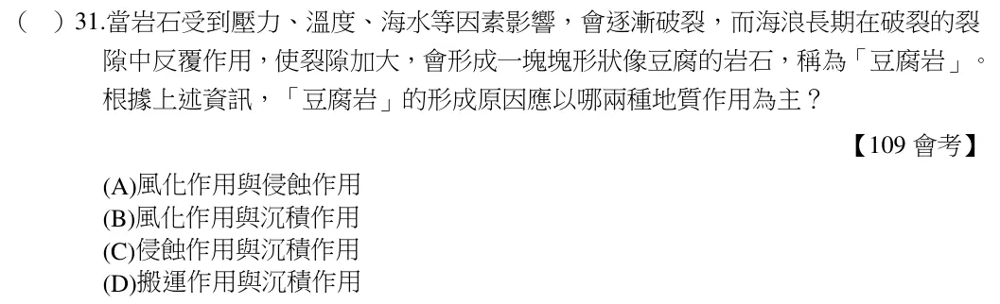
飽含地下水的岩層上界即為地下水面，因此丙為地下水面。故選(C)。
看題目
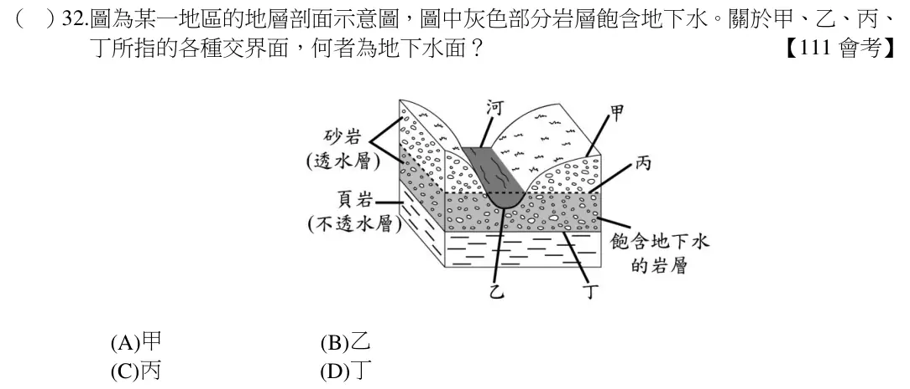
看題組文章
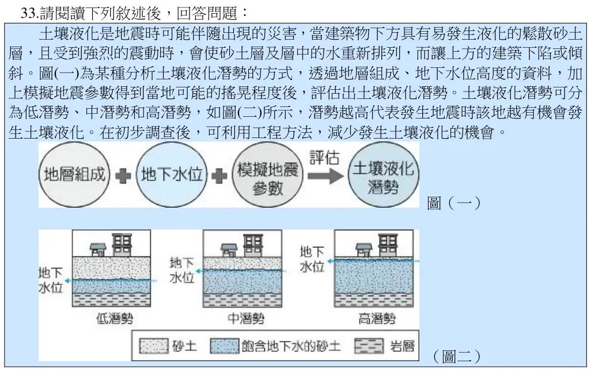
根據圖中所示，當地下水位越高越接近地表時，可能會有較高的土壤液化潛勢。故選
(C)。
看題目
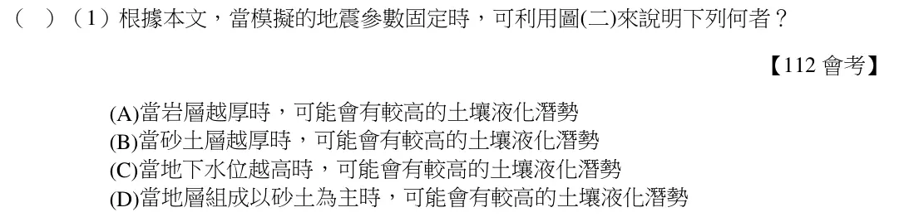
甲為火成岩；題目敘述乙由甲的碎屑物質組成，故乙為沉積岩；火成岩的碎屑物經丙（壓密、膠結等作用）形成沉積岩。(C)選項是變質岩的成因敘述。故選(D)。
看題目
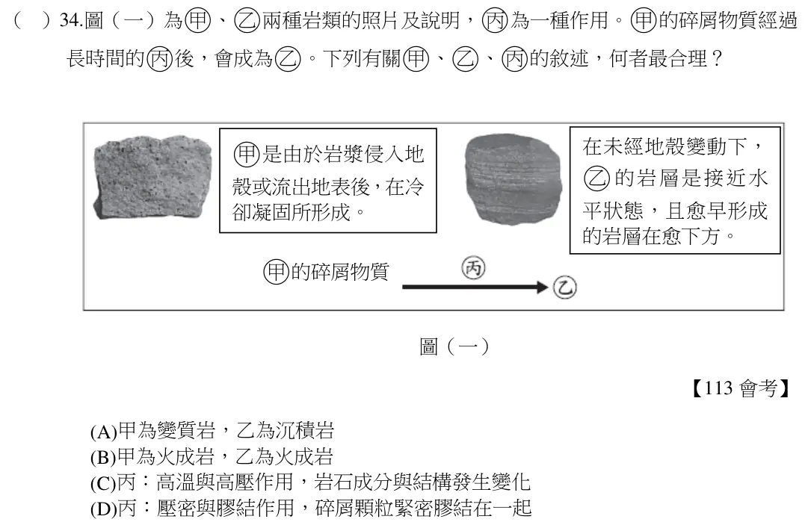
題幹強調的是超抽地下水，導致的現象應該為地層下陷。(B)應為順向坡的影響；(C)則為土石流造成；(D)則為地震導致的災情。故選(A)
看題目
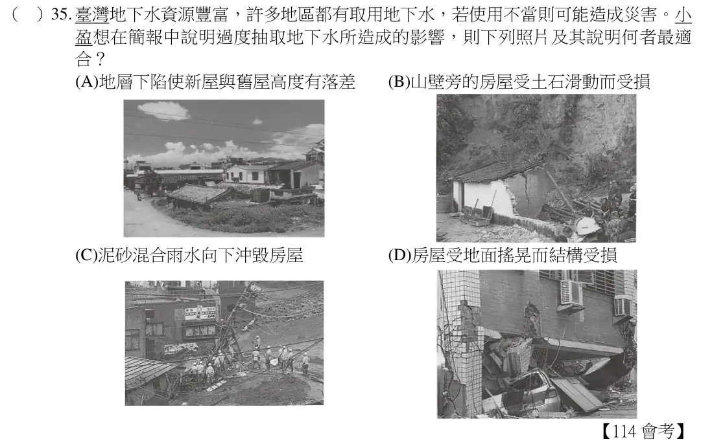